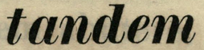
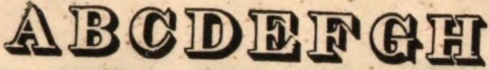
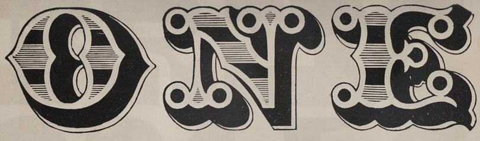
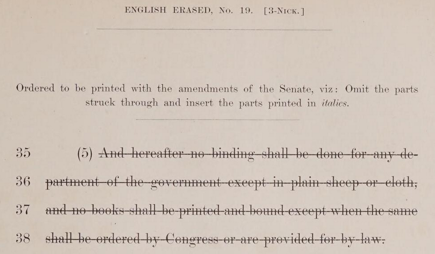
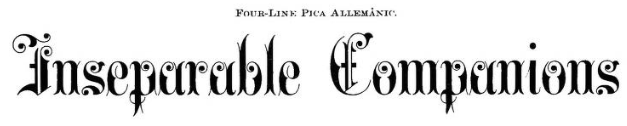
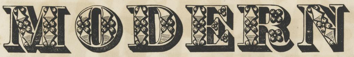

Type Specimen Books
Typefounders periodically published books with samples of the fonts they sold. To show the general trends in specimen books across the century, I examine books from four foundries: Binney & Ronaldson, which ultimately became Mackellar, Smiths, and Jordan (also known as Johnson);1 Bruce (it changed names as the Bruce family member changed); Boston Type Foundry; and American Type Founders, a consolidated foundry group that MSJ and Boston joined at its outset in 1892. Bruce held out and did not become part of ATF until 1900.2
Any image can be right-clicked and opened in a new tab for a higher quality version.
1810s
Binney & Ronaldson
1812
Philadelphia, PA
This is the first known type specimen book published in the US, created by the country's first permanent typefounder. (An earlier book by B&R contained only borders and ornaments.) The organization of the book is confusing, but it contains a blackletter face and two roman faces, one of which can be called a fat face, and corresponding italic forms.

- 
Bruce
1818
New York, NY
This is one of Bruce's earliest books, and has even less variety than Binney & Ronaldson's, lacking ornamented and blackletter faces. However, Bruce does have one script face, and the largest type size shown has gone up to 9-line pica.
1820s
Bruce
1828
New York, NY
Ten years later, Bruce still doesn't have many ornamented faces, but the variety of display faces overall has increased dramatically. Antiques, including French Clarendons, are now available, as are shaded and open varieties. Bruce also seems to be trying to make ordering easier by including a full price list at the beginning of the book. Type was purchased by the pound, and you can clearly see that as the sizes get smaller (i.e. are further down each list) the prices get higher. I don't know the exact weights of the types being sold to do the math, but a full metal font in 10-line pica will almost certainly require more pounds total than the same font in pica, even as typefounders offset the weight of larger type, so the price per font would likely even out. Of course, smaller sizes would also generally be in more demand because they were used for all types of printing, not just display work.
- 

1830s
Boston
1832
Boston, MA
Boston has a similar range of faces at this point as we see in Bruce in 1828, including a French Clarendon and a black ground style. The largest size has ballooned to 20-line pica. It continues the somewhat chaotic organization and longways (parallel to the spine) printing that the previously mentioned specimen books have. The fonts seem to be organized first by how they physically fit on the page together and second by the style of face. I suspect at this point foundries had started selling each other's type, because the note at the beginning makes it clear that these specimens are only of Boston's type.
From this point onwards I will only give important highlights of the specimens because there are too many to look at in depth.
- 
1840s
Bruce
1848
New York, NY
Old faces continue getting new styles, from extra condensed to both shaded and open. This is the first example of Gothics I've seen in an American specimen book, despite the fact that the style has existed in metal type since at least 1816, when William Caslon IV created such a design in the UK.3 It's unlikely to be the very first, but it is notable that Gothics are absent from the earlier books.

1850s
Boston
1856
Boston, MA
There are no clear headers for each page, but faces are starting to get a wider variety of names, presumably to help with ordering. Several ornamented styles return from the 1832 specimen book. The two-color face may be wood type, because this style of face is most associated with chromatic wood types (wood types that were made to be printed in two or more colors, usually with large areas of both) and the type sizes are fairly large. Chromatic wood types first debuted in US specimen books in 1841.4 In this specimen book, Boston does say that they sell some faces of other foundries' type, though none of the specimens appear to be labeled with a different foundry name, so I can't say for sure if any non-Boston specimens are included.
1870s
Mackellar, Smiths, & Jordan
1876
Philadelphia, PA
Ornamented types are slowly reaching their peak in the US, and specimen books are filling up with dozens of similar-yet-different faces. Some of them, like the beveled face, don't quite look like something from the late 19th century. The identifying numbers for the ornamented types seem to reset by page and/or type size, however, leading to a slew of "Ornamented No. 7"s, etc., that are completely different faces.
1880s
Bruce
1882 & later supplements
New York, NY
This book starts with five short supplementary pamphlets, issued in 1883 through 1887, laid into the more complete 1882 specimen book. The first two don't attempt to use the supplementary faces in their first-page headers, but the last three do, acting as a preview of what's to come. Specimen books were surely time-consuming and expensive to produce (though I haven't seen clear numbers), so issuing pamphlets to show each year's half-dozen new styles was a shrewd business move. The footer instructs recipients to lay the supplements into their 1882 book. Bruce has also started numbering the typeface styles, sometimes alongside specific typeface names.
By this point, the sheer variety of faces starts to feel absurd to me. Many of them, like the Italian and Ornamented No. 803 below, are much older faces still being produced and sold, and others, like English Erased, are helping fill a niche that didn't even seem to exist earlier in the century. But as I started to pass judgment on these specimens, I realized that between job printers' demand for novelty and the likelihood that type designers wanted to keep designing type, it's not really a surprise or a bad thing that so many faces existed. They also weren't just making a ten thousandth version of the same face with different properties. There's a sense of experimentation, even play, in these designs, and sometimes a rebellion against rigidity and straight lines. And almost any typeface could find a home in job work, so why not?
- 
Mackellar, Smiths, & Jordan
1885
Philadelphia, PA
Much like the 1882 Bruce book, this book is a cornucopia of old and new faces, still in an order that seems confusing to me. Enough of the samples are the same as in MSJ's 1876 book, e.g. "Inseparable Companions", that I had to double check I wasn't just looking at the 1876 book again but in a different scan quality. As a point of reference I've included examples of Lightface Extra Condensed, Lightface Condensed, regular Lightface, and Lightface Extended. Having multiple widths of a face had long been important to 19th century job work, but the specimens weren't always conducive to illustrating that.
- 

Boston
1889
Boston, MA
Here Boston explcitly includes faces from a few other founders, and uses "Egyptian" for Italian typefaces.
1890s
Mackellar, Smiths, & Jordan
1892
Philadelphia, PA
Face names are only getting more consistent. Some of these examples can be compared to the 1890 ATF book that follows this one. Others match up to designs on the Printers' Advice page. The pop-out faces and faes made to be used with border pieces are interesting. But mostly I want you to consider whether you would have thought that the last 5 samples were from the late 1800s if they were shown to you without context. If you're like me, you would have been more likely to assign them to the latter half of the 1900s instead.
American Type Founders
1896
San Francisco, CA/Portland, OR
This is the third specimen book released by ATF after their consolidation in 1892, and one of the few I was able to access online. It contains work from several foundries with the names unchanged. It shows how typefounders have branched out into selling presses, cases, furniture, glue brushes, and other printing and binding hardware and accessories—in fact, this "catalogue" extends from page 8 to page 155. Some of these offerings had appeared in members' specimen books previously, like the first four examples, which are MSJ (Crayon), MSJ (Stipple) Boston (Kismet), and Boston (Harper) respectively, with the same names.
On the subject of modern-looking types, the last example, Pen Text, may look familiar to you. It's almost certainly one of the influences behind French Script MT.
for some time, such as brass rules and dashes. The type section actually starts with typesetting examples that demonstrate both line width and point sizes. It is only after the "Self Spacing Type" (which itself deserves more research) that the type specimens focused on style truly begin.For Further Research
Duplicate specimens
Annenberg claims that Howe's type matrices were probably borrowed5. Howe's ornamented faces strongly suggest this is correct. But it looks like there was more sharing or stealing/imitating than is immediately obvious. Howe did work with Boston for a time after his foundry closed6. But also the first typeface patent hadn't been issued yet.
- Howe (1830)
- Bruce (1828)
- Howe (1830)
- Baltimore (1832)
- Boston (1832)
- Boston (1832)
- Baltimore (1832)
That wasn't all. More duplicates showed up between the 1856 Boston book and 1885 MSJ book:
- Boston (1856)
- MSJ (1885)
- Boston (1856)
- MSJ (1885)
I don't have access to enough specimen books to accurately hypothesize what's happening here. Were they selling each other's type? That definitely was a thing foundries did, and Boston supposedly does it with their 1856 book as well as 1889.
Type Sizes
Annenberg and Pasko agree that Marder, Luse, and Co. brought the point sizing system to the forefront after 1871. But Bruce claimed to have their own standardized numerical sizes in 1882, and Marder, Luse, and Co. says in 1893 that those who originally opposed the point system then pretended like they hadn't. Maybe to the point of claiming the idea was theirs?
Typeface Patents
A deeply underexplored area of typeface design and selling, despite the fact that many foundries advertised when their typefaces were patented. The first was issued in 1842, but patents are rarely mentioned in terms of history of the book/graphic design.
Wood Type
I simply did not have time to get into wood type research, but chromatics are gorgeous and wood type is integral to the large-size typesetting for posters that became common in the 1800s.
Sources
- Maurice Annenberg, Type Foundries of America and Their Catalogs, (Baltimore: Maran Printing Services, 1975), 162-163, 179.
- Ibid., 82.
- Jason Tselentis, Allan Haley, Richard Poulin, Tony Seddon, Gerry Leonidas, Ina Saltz, Kathryn Henderson, and Tyler Alterman, Typography, Referenced: A Comprehensive Visual Guide to the Language, History, and Practice of Typography, (Osceola: Quarto Publishing Group USA, 2012), 12.
- Rob Roy Kelly Collection, “Chromatics”.
- Maurice Annenberg, Type Foundries, 154.
- Ibid., 71.
A Database of American Typeface Design Patents, 1842-1899. Compiled by Jane W. Roberts and Stephen O. Saxe. (Mineral Point, WI: CircuitousRoot, 2015). Accessed May 7, 2023. https://www.circuitousroot.com/artifice/letters/press/typemaking/history/typeface-index/roberts-saxe/index.html